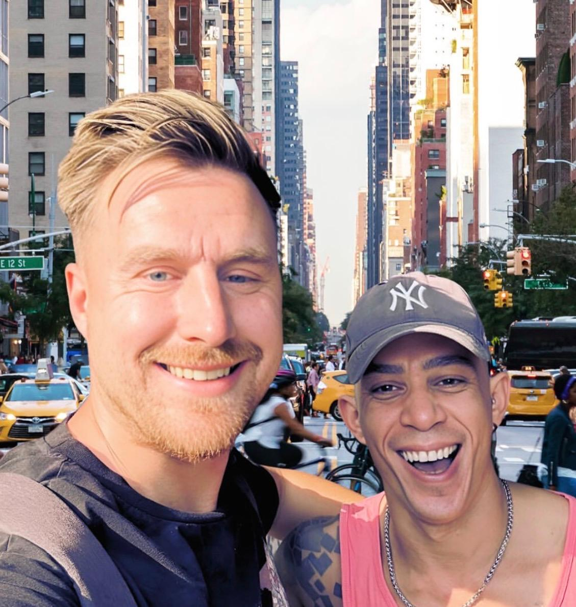

A space for reflection
Humanizing Friendship™
Because the people closest to us often shape the person we become.
Friendship influences our confidence, our identity, our wellbeing, the way we lead and the way we communicate. It is one of the most overlooked areas of human development, quietly shaping who we become, long before we notice it happening.
Explore ↓Why It Matters
Why Friendship Matters
We rarely think of friendship as something to be intentional about. Yet the people we spend our time with quietly influence far more than we realise.

Real friendships aren't posed.
Ten Conversations
Ten Conversations About Friendship
Not a list of services. Ten ideas worth sitting with, each one a doorway into a longer conversation, if you want to walk through it.
What Makes a True Friend?
Beyond loyalty and history, what actually makes someone a true friend, and how honestly can most of us answer that question?
Start the conversation →Becoming the Friend You'd Want to Have
It is easy to list what we want from others. Harder to ask whether we're offering the same in return.
Start the conversation →Healthy Boundaries
Boundaries aren't walls. They're often what allows a friendship to last long enough to become meaningful.
Start the conversation →Difficult Conversations
The conversations we avoid having are usually the ones the friendship most needs.
Start the conversation →Seasons of Friendship
Not every friendship is meant to last forever, and that doesn't make it any less meaningful while it does.
Start the conversation →Rebuilding Trust
Trust rarely returns the way it left. What it takes to rebuild something that was broken, honestly.
Start the conversation →The Influence of Your Inner Circle
You are, in part, an average of the people you spend the most time with. Worth knowing who that is.
Start the conversation →Friendship and Leadership
The way we show up for our friends is often the clearest indication of the leader we actually are.
Start the conversation →Conflict Without Losing Connection
Disagreement doesn't have to mean disconnection. It is possible to hold both at once.
Start the conversation →Lifelong Friendships
What quietly separates the friendships that last a lifetime from the ones that fade.
Start the conversation →Ways We Can Work Together
Ways We Can Work Together
A few different ways to explore this, depending on what would be most useful right now.
Friendship Conversations
A single, unhurried conversation to explore what's on your mind.
Book a Conversation →One-to-One Friendship Coaching
Ongoing support for navigating a specific friendship or pattern.
Book a Conversation →Friendship Mediation
A guided, neutral space for two friends working through a rupture.
Book a Conversation →Friendship Mentoring
Longer-term guidance for building healthier, more intentional friendships.
Book a Conversation →Humanizing Friendship Circles
A small, recurring group exploring these ideas together over time.
Book a Conversation →Small Group Discussions
A single facilitated session for a team, family or existing friend group.
Book a Conversation →Featured Workshops
Featured Workshops
Two signature workshops, built around the conversations people return to most.
Workshop One
The Company We Keep
Helping people understand how friendships shape confidence, decision making, values and life direction.
Explore What's PossibleWorkshop Two
Humanizing Friendship
Communication, trust, boundaries, emotional intelligence and creating friendships that last.
Explore What's PossibleReflections
“Friendship is not measured by how long someone has been in your life, but by how they show up while they're in it.”
“The people closest to us quietly shape the person we become.”

Julian's Story
Friendship Has Been One of My Greatest Teachers
Not the version people usually expect to hear.
Some of the friendships in my life brought joy, encouragement and growth I couldn't have found alone. Others brought disappointment. Looking back, both taught me something I needed to learn about trust, communication, boundaries and what it actually means to show up for someone.
Friendship is not about finding perfect people.
It is about becoming a better human being.
That's the belief this space is built on. Not a framework to sell, but a genuine invitation to think differently about the relationships closest to you, the ones that, quietly, are shaping who you're becoming.
Featured Article
Why Friendship May Be the Most Underrated Investment You'll Ever Make
We invest carefully in our careers, our health and our finances. Friendship rarely gets the same deliberate attention, despite shaping almost everything else on that list.
Most of us can name our closest friends without hesitation. Far fewer of us could explain why those particular people, and not others, ended up in that inner circle. Friendship tends to happen to us rather than being something we consciously choose and tend to, the way we might a career or a habit of exercise.
Yet the research and the everyday evidence point the same way: the people we spend the most time with shape our confidence, our decision-making, our sense of belonging and even our resilience under pressure. A steady friendship can be the difference between facing a hard season alone and facing it supported. A single honest conversation with the right friend can shift the direction of a decision entirely.
Trust is the quiet infrastructure underneath all of this. It is built slowly, through small moments of being heard, being told the truth kindly, and being shown up for when it was not convenient. It is also more fragile than we like to admit, which is why so many friendships drift rather than end, not from any single betrayal, but from years of small withdrawals nobody named at the time.
None of this means every friendship needs saving, or that distance is always a failure. Some friendships are seasonal by design, and there's a kind of maturity in recognising when one has run its natural course without turning it into a story about blame.
What it does mean is that friendship deserves the same intentionality we bring to the rest of our lives, the same willingness to reflect, to have the harder conversation, and to occasionally ask whether we're being the kind of friend we'd want to have. Understanding people changes everything. Friendship is simply one of the most meaningful places to begin.
Every meaningful friendship begins with a conversation.
Whether you're looking to strengthen a friendship, rebuild trust, navigate change or simply better understand the relationships that shape your life, I'd love to explore that journey with you.
Let's Start the Conversation